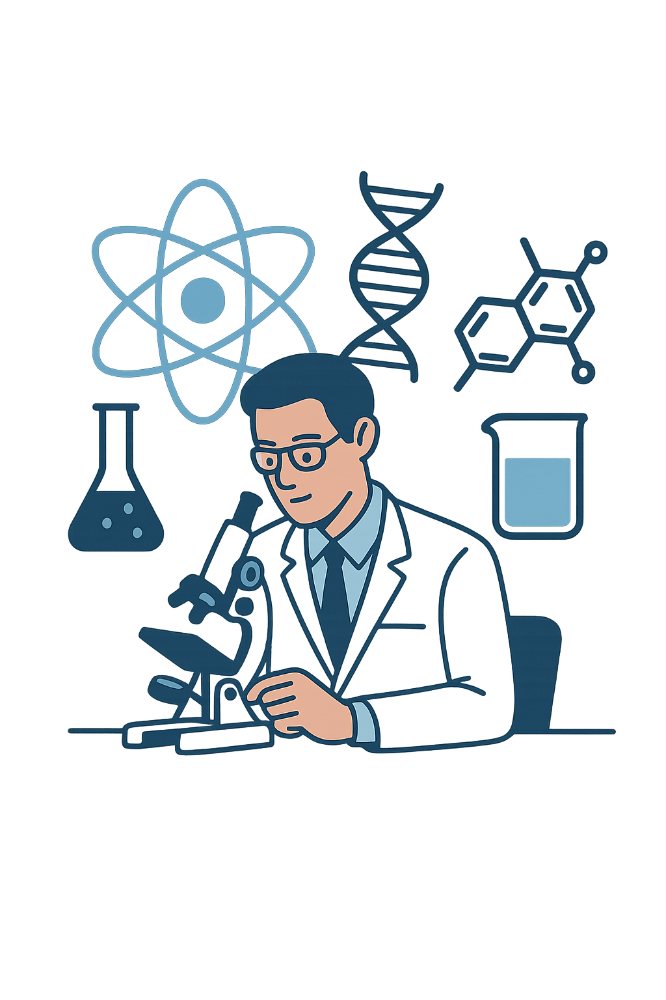

Предлагаемые услуги
Штатное планирование
- Составление сметы доходов и расходов без инвестиции на развитие компании (организации).
- Составление сметы доходов и расходов с учетом инвестиции на развитие компании (организации) (инвестиции: собственные или заемные).
- Составление бизнес-плана компании (организации).
- Анализ сметы доходов и расходов с целью оптимизации расходов, а также эффективного использования доходов и расходов компании.
- Составление штатного расписания компании на основе исходных данных заказчика.
- Анализ штатного расписания компании (организации)...
- Оптимизация численности и структуры подразделений.
- Распределение нагрузки (штатной, учебной, научной и административной).
- Внедрение ставок, долей ставок.
- Подготовка обоснований для уполномоченного органа, учредителя.
- Аудит действующего штатного расписания.
- Проведение офлайн или онлайн семинаров по штатному планированию.

Наука
- Консультационные услуги: проведение научных исследований по естественно- техническим и другим направлениям деятельности вузов, научно- исследовательских институтов (центров), колледжей и других организаций (компании); проведение анализа и корректировки научно- исследовательских отчетов; составление заявки на конкурс грантового финансирования научных исследований и других видов конкурсов научных исследований; по проведению междисциплинарных исследований; по подбору партнеров для проведения совместных научных исследований в странах ближнего и дальнего зарубежья.
- Проведение совместных научных и междисциплинарных исследований; совместное участие в конкурсе на грантовое финансирование и в других конкурсах по научным исследованиям; совместная публикация научных статей в журналах, входящих в международную базу данных.
- Проведение офлайн или онлайн семинаров по актуальным вопросам научных исследований, эффективному использованию финансовых средств исследовательской группы, научной организации, а также по рациональному применению штатного персонала.
Образование
- Консультационные услуги: анализ рабочих учебных планов образовательных программ (ОП) с целью повышения качества рабочих учебных планов ОП; аудит учебной нагрузки ППС; анализ качественного состава ППС Высших школ (факультетов, кафедр) и сотрудников отделов, управлений и рекомендации по повышению качественного уровня ППС и сотрудников отделов, управлений; анализ материально- технической базы (оборудование, приборы, программное обеспечение) и рекомендации по улучшению качества материально- технической базы.
- Разработка положений и нормативных документов по обучению студентов рабочим профессиям; разработка мероприятий по усилению связи руководства и ППС вуза и руководства и ответственных работников предприятии с целью подготовки востребованных и конкурентоспособных выпускников вуза.
- Разработка нормативов и связи с производством
- Проведение офлайн или онлайн семинаров по актуальным вопросам высшего и послевузовского образования.
Наши преимущества
Профессионализм
Специалисты с опытом работы на руководящих должностях и сертификатами.
Практика и опыт
Комплексное сопровождение организаций в разных сферах.
Гибкость подхода
Адаптация решений под специфику и цели заказчика.
Качество
Высокие стандарты в анализе, рекомендациях и сопровождении.
Свяжитесь с нами
Свяжитесь с нами, чтобы вывести Вашу организацию (компанию) на новый уровень эффективности — в науке, образовании и в штатном планировании.
Качественную, компетентную, профессиональную и грамотную работу проводят высокопрофессиональные специалисты, имеющие сертификаты и большой практический опыт работы на различных руководящих должностях.